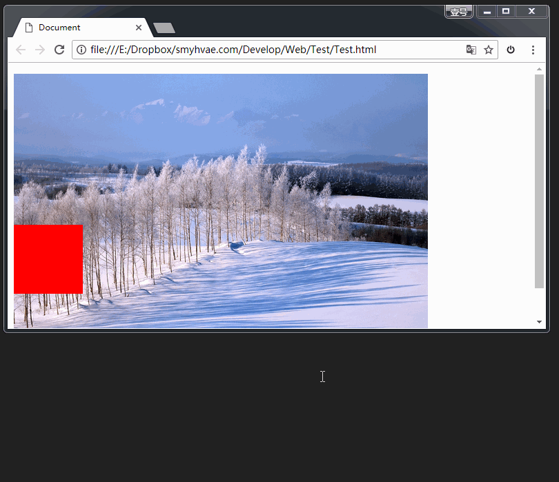

定位
CSS定位有三种，绝对定位、相对定位、固定定位
- position: absolute; 绝对定位
- position: relative; 相对定位
- position: fix; 固定定位
1. 相对定位
相对定位：让元素相对于自己原来的位置，进行位置调整（可用于盒子的位置微调）。
我们之前学习的背景属性中，是通过如下格式：
background-position:向右偏移量 向下偏移量;
但这回的定位属性，是通过如下格式：
position: relative;
left: 50px;
top: 50px;
相对定位不脱标
相对定位：不脱标，老家留坑，别人不会把它的位置挤走。
也就是说，相对定位的真实位置还在老家，只不过影子出去了，可以到处飘。
相对定位的用途
如果想做“压盖”效果（把一个div放到另一个div之上），我们一般不用相对定位来做。相对定位，就两个作用：
（1）微调元素
（2）做绝对定位的参考，子绝父相
相对定位的定位值
left：盒子右移
right：盒子左移
top：盒子下移
bottom：盒子上移
PS：负数表示相反的方向。
例子：box1、box2、box3为顺序的3个div
box2设置了相对定位，left202 top-202 所以和box1平行，但是box2的位置仍然被box2占着，所以box3上面空出200X200的位置
1
2
3
2. 绝对定位
绝对定位：
定义横纵坐标。原点在父容器的左上角或左下角。横坐标用left表示，纵坐标用top或者bottom表示。
格式举例如下：
position: absolute; 绝对定位
left: 10px; 横坐标
top/bottom: 20px; 纵坐标
demo
下面例子中abs为绝对定位{bottom200 left1000因此在最上面}
三个div盒子分别为box1 abs box3，由于abs被设为了绝对定位，脱离了文档流，所以box1和box3紧挨着
1
abs
3
绝对定位的参考点（重要）
（1）如果用top描述，那么参考点就是页面的左上角，而不是浏览器的左上角：


（2）如果用bottom描述，那么参考点就是浏览器首屏窗口尺寸（好好理解“首屏”二字），对应的页面的左下角：
为了理解“首屏”二字的含义，我们来看一下动态图：

（3）以盒子为参考点 一个绝对定位的元素，如果父辈元素中也出现了已定位（无论是绝对定位、相对定位，还是固定定位）的元素，那么将以父辈这个元素，为参考点。
以下例子中，4个div盒子顺序排放，父div设置了position: relative。
盒子1: (200X200)
盒子2: abs(相对定位 bottom200 left1000)
盒子3: (200X200)
盒子4: (200X200)
1
abs
3
4
实际应用中，“子绝父相”有意义：这样可以保证父亲没有脱标，儿子脱标在父亲的范围里面移动。于是，工程上经常这样做：
父亲浮动，设置相对定位（零偏移），然后让儿子绝对定位一定的距离。
需要注意的几点：
（1）要听最近的已经定位的祖先元素的，不一定是父亲，可能是爷爷。
（2）不一定是相对定位，任何定位，都可以作为儿子的参考点。
（3）绝对定位的儿子，无视参考的那个盒子的padding。
demo，做一个商品列表格
广东深圳宝安区建安一路海雅缤纷城4楼
【海洋缤纷城】万达影城（深圳海雅广场）这是一个广场，商场。
单人电影票，可观看2D
3. 固定定位
固定定位：就是相对浏览器窗口进行定位。无论页面如何滚动，这个盒子显示的位置不变。
备注：IE6不兼容。
用途1：网页右下角的“返回到顶部”
比如我们经常看到的网页右下角显示的“返回到顶部”，就可以固定定位。
用途2：顶部导航条
我们经常能看到固定在网页顶端的导航条，可以用固定定位来做。
需要注意的是，假设顶部导航条的高度是60px，那么，为了防止其他的内容被导航条覆盖，我们要给body标签设置60px的padding-top。
顶部导航使用js判断滚动条是否超出，超出则固定顶部导航。
4. z-index属性
z-index属性：表示谁压着谁。数值大的压盖住数值小的。
有如下特性：
（1）属性值大的位于上层，属性值小的位于下层。
（2）z-index值没有单位，就是一个正整数。默认的z-index值是0。
（3）如果大家都没有z-index值，或者z-index值一样，那么在HTML代码里写在后面，谁就在上面能压住别人。定位了的元素，永远能够压住没有定位的元素。
（4）只有定位了的元素，才能有z-index值。也就是说，不管相对定位、绝对定位、固定定位，都可以使用z-index值。而浮动的元素不能用。
（5）从父现象：父亲怂了，儿子再牛逼也没用。意思是，如果父亲1比父亲2大，那么，即使儿子1比儿子2小，儿子1也能在最上层。
针对（1）（2）（3）条，举例如下：
这是默认情况下的例子：（div1在上层，div2在下层）
1
2
为1设置z-index: 2 为2设置z-index: 1，覆盖调过来了。
1
2
z-index属性的应用还是很广泛的。当好几个已定位的标签出现覆盖的现象时，我们可以用这个z-index属性决定，谁处于最上方。也就是层级的应用。
层级：
（1）必须有定位（除去static）
（2）用z-index来控制层级数。